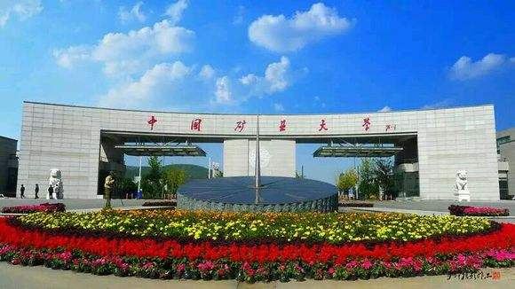
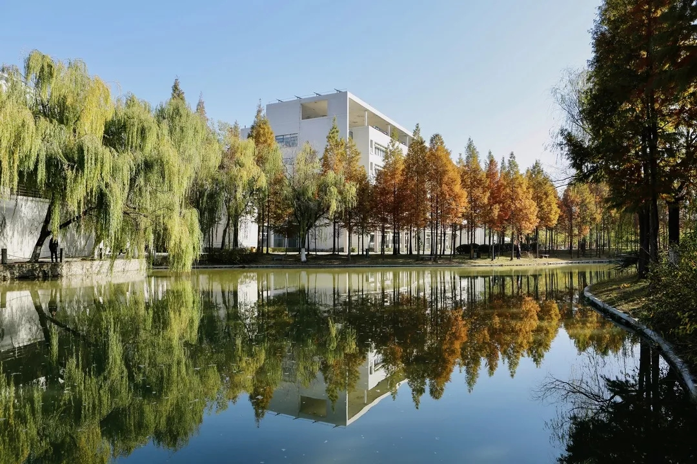
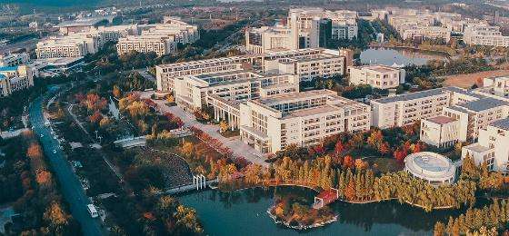
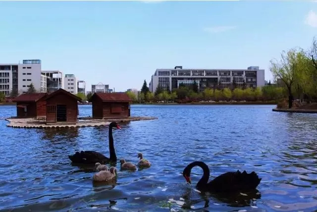

-
图书馆
-

矿大大门
-
博学楼
-

镜湖
-
花海
-
镜湖大讲堂
-

博学楼
-

可爱的黑天鹅
中国矿业大学（China University of Mining and Technology），简称“矿大”，坐落于有“五省通衢”之称的江苏省徐州市，是教育部直属的全国重点大学，教育部与江苏省人民政府、国家安全生产监督管理总局共建高校， [1] 是首批列入国家“211工程”、“985平台”、“111计划”和“卓越工程师教育计划”重点建设的高校、国家首批“双一流”世界一流学科建设高校、高水平行业特色大学优质资源共享联盟成员，也是国家大学生创新性实验计划、国家建设高水平大学公派研究生项目、海外高层次人才引进计划实施高校。 [2]
中国矿业大学是新中国第一所矿业高等学府，世界著名的矿业学府。学校溯源于1909年创办的焦作路矿学堂，于1938年与东北大学工学院、北平大学工学院、北洋大学工学院在陕西城固合组为国立西北工学院。因历史变迁，学校徐州校本部和北京校区逐步演变为两个相互独立的办学实体。
截至2016年9月，学校有本科生23900余人，各类硕士、博士研究生11000余人，留学生460余人；校园占地面积4413亩，校舍面积130余万平方米；有57个本科专业，35个一级学科硕士点，10个专业学位硕士点，16个一级学科博士点，14个博士后科研流动站；有1个一级学科国家重点学科，8个国家重点学科，1个国家重点（培育）学科。 [2]
在教育部2012年学科评估中，中国矿业大学的矿业工程、安全科学与工程、测绘科学与技术、地质资源与地质工程分别排名第一、一、三、四位。工程学、地球科学、材料科学、化学ESI学科排名进入全球前1%。